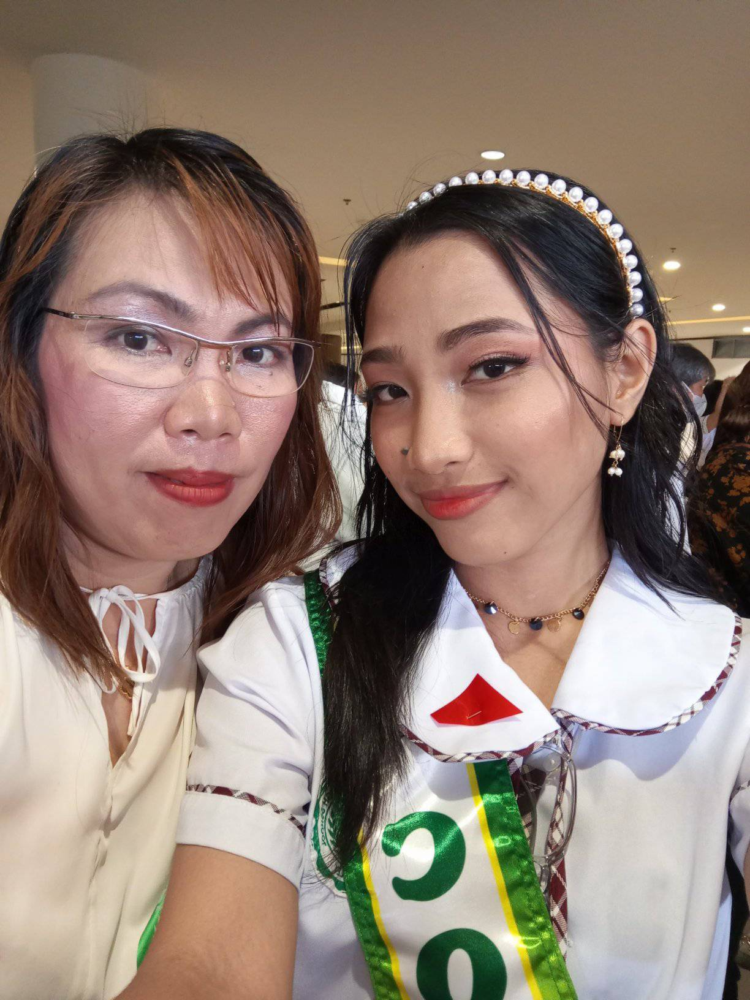

Define Achievements
Mikaella's Autobiography
Mikaella's Autobiography
What kind of student Mikaella is? Considering the achievements she
accomplish for the past few years?
Mikaella is a student who's interested in different types of field and a conscious student who overthinks the future awaiting
for her. This made her wonder if having these bunch of goals is an advantage for her or if
this is just another challenge for her to face. However, despite of these struggles and difficulties, she have learned that
it is fine to explore things and trust the process as she tackles her journey in her chosen field.
Despite of all the things she've experiencing as a student, it didn't became a major obstacle to achieve her dreams. On July, 12
2023, she graduated from her Junior High School life at City of Bacoor National Highschool with an honor and special award: Best in TLE.
However, this isn't something that she should brag about. Because the biggest achievement she achieved through those years are:

Achieving something means everything to her, but it is also an achivement to
be with her mother on her moving up day. It is a great experience to walk on the stage knowing that your mother is there to place your
medals. It is heartmelting to know that your mother is always there to support your achievements. She is also the very first person
to providse for your needs and the love you need. My mother might not be the perfect person for everyone's eyes, but she is the one of the
most important perfect person for me.

Graduating with your friends is one of the memorable things that you can do with them. It is the most important and joyful thing.
We're not just talking about how close you are with them, how many things you've done together, but it is also about being there when
someone needs the support of your ciercle. It is one of Mikaella's achievement to be with her friends on the venue, knowing that
there are a lot of things that made them vulnerable, that almost drained them.
Let us not forget the second person who treated her as a daughter. The Mathematician teacher who teaches different type of mathematical equation and solve problems. Ma'am Janette Frrera is her 4th year adviser in junior highschool, she isn't just a "teacher" for her students, she is also a mathematics teacher who loves to care for her students, the woman who molds her students to become a better version of themselves. She is the one who really know Mikaella.